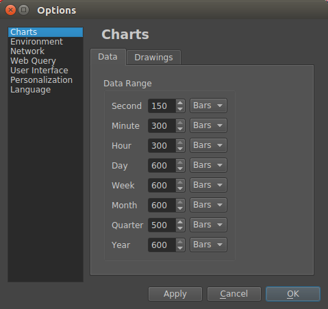
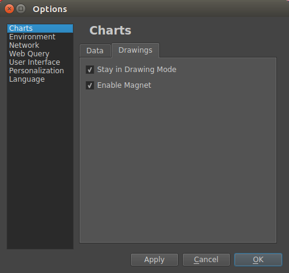
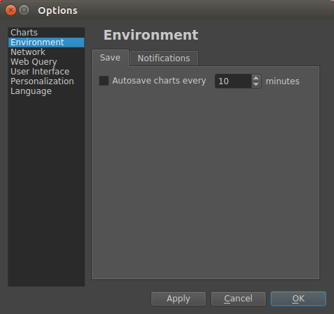
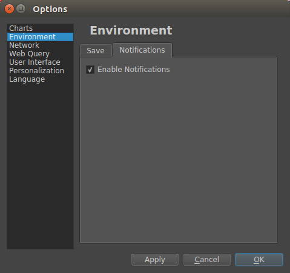
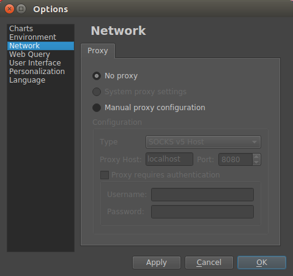
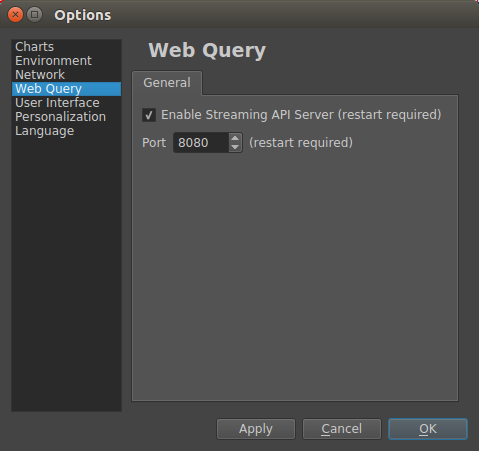
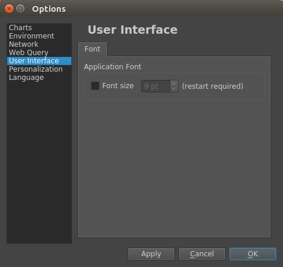
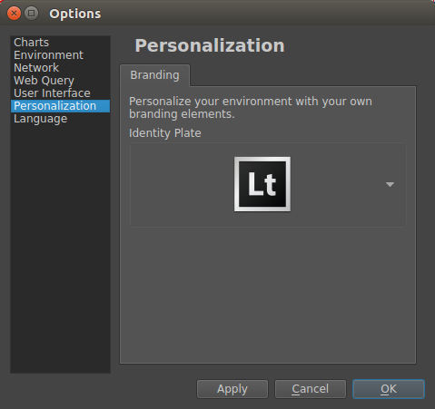
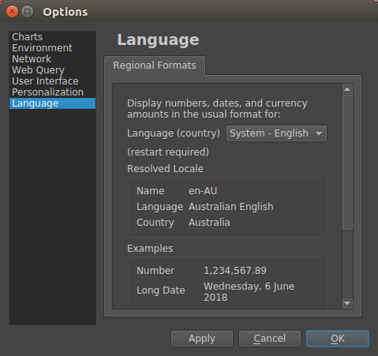

App Options window¶
On macOS this is called the Preferences window
Charts > Data tab¶
- Data Range
- Specify the default number of bars to load for each chart interval group
Charts > Drawings tab¶
- Stay in Drawing Mode
- If checked drawing tool remains active after drawing something, if unchecked after drawing the Selection [Black Arrow] tool is set active.
- Enable Magnet
- When drawing over (on top) of the main price series the drawings points will snap to the open, high, low, or close price.
Environment > Save tab¶
- Autosave charts every X minutes
- If checked the charts will auto-save at the specified interval.
Environment > Notifications tab¶
- Enable Notifications
If checked sounds will be played on certain events.
Events with sound effects:
- Price alerts play an alert sound, on Linux text popup notification may also be displayed.
- Data and trading connection state changes (e.g connected and disconnected)
- If trading is enabled, sounds play on a new order, order modify, fill, cancel, and close.
Network > Proxy tab¶
Configure network proxy.
FXCM connections only support HTTP proxy type, not SOCKS.
WebQuery > General tab¶
- Enable Streaming API server
- If checked the server will be launched when the app starts
- Port number
- The port to use for the WebQuery server
You should switch off the WebQuery server when it is not in use
User Interface > Font tab¶
- Application Font - Font size
- Set the default font size. This affects most fonts used in the application including the default font used for chart axes.
Personalization > Branding tab¶
- Identity Plate
- You can set a custom logo or other image. The image is displayed on exported images.
Language > Regional Formats tab¶
- Language and country:
- Select the language and country combination you want to use for number and date formatting. The application supports using a comma or period for the decimal point.